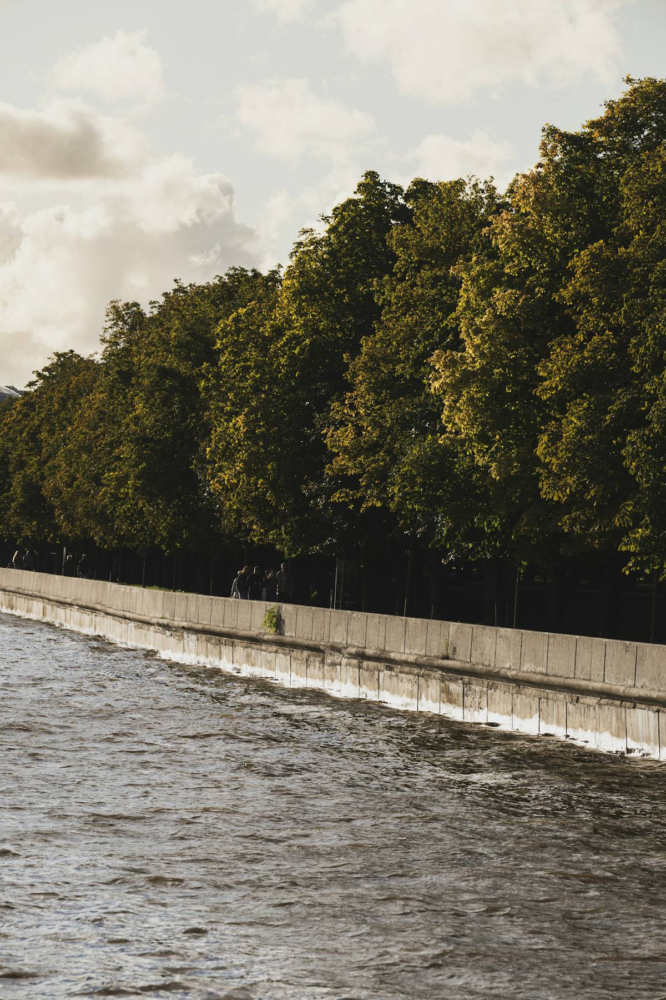
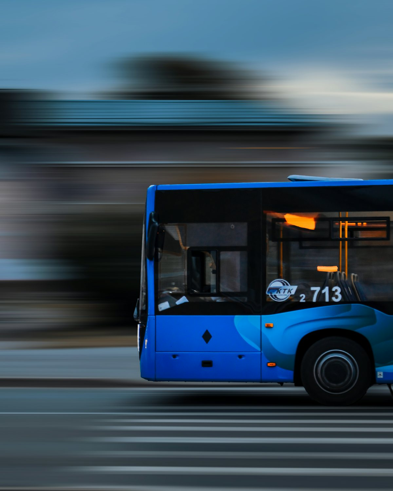

Что решают в вашем районе
Жители Северного округа сами распределяют 15 млн ₽ бюджета на 2027 год. Отметьте проекты — на макете появится то, что изменится.

Потяните, чтобы повернуть макет
Голосование открыто до 7 декабря. Город и жители в демо вымышлены.
Как проходит цикл бюджета
- Сбор идей
Жители предлагают проекты для своего двора и улицы. Повторы находятся автоматически.
- Проверка смет
Администрация считает стоимость и отмечает, что можно сделать за год.
- Голосование
Каждый собирает свою корзину в пределах бюджета и получает квитанцию голоса.
- Реализация
Победители видны на карте района, ход работ обновляется каждый месяц.
Наверху — то, с чем согласны все
У жителей разные взгляды: кто-то ездит на машине, кто-то ходит пешком, у кого-то дети. VoteConnect ищет решения, которые поддерживают все три группы, и поднимает их выше споров.
автомобилистыпешеходысемьи

Фигуры в центре согласны с утверждением
Отчёт для совета — в один клик
С чем согласны все группы жителей, что прошло по бюджету и где нужен диалог. Документ готов к заседанию и скачивается в PDF.
| Решение | автомобилисты | пешеходы | семьи |
|---|---|---|---|
| Навесы и табло на остановках | 90% | 94% | 89% |
| Отчёты о тратах района каждый месяц | 88% | 90% | 85% |
| Парковки у метронужен диалог | 91% | 18% | 52% |
Найдите свой район
Покажем проекты бюджета рядом с вашим домом. Адрес остаётся на вашем устройстве.